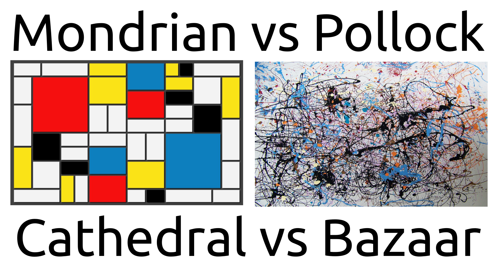
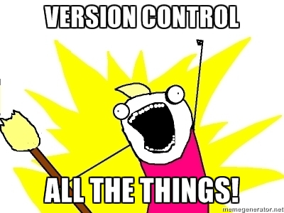
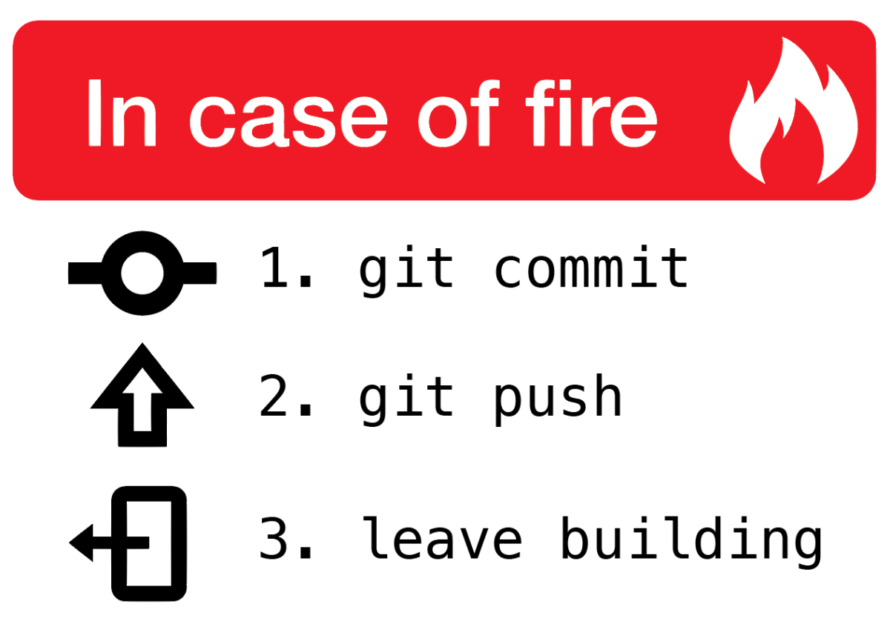

Introduction à Git
Nicolas Borboën <ponsfrilus@gmail.com>
February 15, 2021
Qu’est-ce que Git ?
Git est un logiciel de gestion de versions décentralisé. C’est un logiciel libre créé par Linus Torvalds, auteur du noyau Linux, et distribué selon les termes de la licence GPLv2. En 2016, il s’agit du logiciel de gestion de versions le plus populaire qui est utilisé par plus de douze millions de personnes.
Pourquoi utiliser Git

Git est un logiciel de gestion de versions décentralisé.

Décentralisé vs centralisé

SVN, CVS, Perforce (centralisés) vs Git, Mercurial, Bazaar (décentralisés)
Fonctionnement
Le seul dossier un peu particulier créé par Git est un dossier .git (c’est un dossier caché situé à la racine du projet). Il contient l’historique des modifications des fichiers et la configuration de Git pour ce projet.
https://openclassrooms.com/fr/courses/1233741-gerez-vos-codes-source-avec-git
Utilisation locale
La plupart des opérations de Git ne nécessitent que des fichiers et ressources locaux […] Git vous fera penser que les dieux de la vitesse ont octroyé leurs pouvoirs à Git.
Les tripes de Git
- objects: stockage du contenu
- tree: répertoire
- blob: fichier (Binary Large OBject)
- commit: instantané
- tag: une étiquette pointant toujours sur un même commit
- refs: méchanisme interne pour représenter les branches et les tags
https://git-scm.com/book/fr/v1/Les-tripes-de-Git-Les-objets-Git
Utilisation (pour démarrer)
Initialisation d’un dépôt Git dans un répertoire existant
$ git initRécupération d’un dépôt distant dans un dépôt local
$ git clone $URI
https://git-scm.com/book/fr/v2/Les-bases-de-Git-Démarrer-un-dépôt-Git
Utilisation (modifications dans le dépôt)
- Placer de nouveaux fichiers sous suivi de version
$ git add . - Valider vos modifications
$ git commit- il ne concerne qu’une chose et une seule ;
- il est le plus petit possible (tout en restant cohérent) (atomique).
https://git-scm.com/book/fr/v2/Les-bases-de-Git-Enregistrer-des-modifications-dans-le-dépôt
Utilisation (état)
- Vérifier l’état des fichiers
$ git status - Visualiser l’historique des validations
$ git log .
https://git-scm.com/book/fr/v2/Les-bases-de-Git-Visualiser-l'historique-des-validations
Utilisation (avec d’autres personnes)
- Envoyer ses modifications sur un serveur
$ git push - Récupérer des modifications depuis un serveur
$ git pull
https://git-scm.com/book/fr/v2/Les-bases-de-Git-Visualiser-l'historique-des-validations
Branches

- Une branche n’est qu’une étiquette qui pointe vers un commit.
- Elle permet d’avoir facilement des environnements de développement séparés (feature, bug fix).
- Changer de branche modifie les fichiers dans votre répertoire de travail.
https://git-scm.com/book/fr/v1/Les-branches-avec-Git-Travailler-avec-les-branches
Utilisation (flow)
L’utilisation des branches peut être liée à des bonnes pratiques, par exemple :
Utilisation (conflits)
Lors qu’un fichier est modifié par un autre utilisateur, ou que vous voulez fusionner deux branches, il arrive qu’il soit nécessaire de résoudre des conflits.
Afin de pouvoir résoudre les conflits visuellement, il existe des outils adéquats, par exemple Meld. Pour définir l’outil utilisé pour résoudre les conflits, utiliser la commande: $ git config merge.tool meld
Résumé
Git de survie
git init / git clone
git add, git commit
git status / git diff / git log
git push / git pull
États

Relevant xkcd

Plateforme d’hébergement Git
Bien que l’utilisation de Git puisse être fait indépendament d’un service d’hébergement, ces derniers apportent des fonctionnalités pratiques, notamment dans le cadre du travail en équipe.
Fonctionalités
- visualisation des fichiers et des commits
- édition en ligne
- forks / pull request / merge request
- issue tracker
- CI/CD
- wikis
- social network pour développeurs
Plateforme les plus connues
GUI
Git est fait pour être utilisé en ligne de commande. Cependant, il existe plusieurs interface graphique pour l’utiliser :
git instaweb --httpd=webrickgitk- GitKraken
- GitAhead
- et plein d’autre : https://git-scm.com/download/gui/
IDE
Git est intégrés à des IDE/éditeurs :
Extras
Les programmes comme Git Extras ou gh cli permettent de gagner beaucoup de temps.
Pratique
Installation
Pratique : initialiser un repo
- Créer un dépôt local
$ git initdans un répertoire - Manipulation:
- création fichier, édition fichier ;
$ git add fichier“Staging aera”$ git commit -m "mon message de log" fichier“Repository aera”
- Utiliser
$ git statusentre les étapes
Pratique : Créer un conflit
- Modifier un fichier et le commiter
- Création d’une branche sur le répertoire courant et switcher dessus
$ git checkout -b maBranche - Editer les mêmes lignes du fichier dans la branche et le commiter
- Retrouner sur la branche
master:$ git checkout master - Fusionner
maBranchedansmaster:$ git merge maBranche - Identifier le conflit avec
$ git status - Résoudre le conflit, par exemple avec Meld
Pratique (conflits)
~/gitTest(branch:master) » git merge maBranche
Auto-merging fichier
CONFLICT (content): Merge conflict in fichier
Automatic merge failed; fix conflicts and then commit the result.- Ouvrir l’outil de résolution de conflits :
$ git mergetool - Résoudre les conflits (le fichier central est le fichier final)
- Utiliser
$ git add fichieret$ git commit -m"Merge"-> conflits résolus
Pratique (conflits)
Utiliser une commande pour voir le graph des commits, par exemple :
$ git log --graphou$ git log --graph --oneline --decorate --all
Conclusion


Ressources [1]
- Starter Pack
- Le site officiel : https://git-scm.com/
- Les multiples clients : https://git-scm.com/downloads
- Les pages de documentation : https://git-scm.com/doc
- Le livre, en français : https://git-scm.com/book/fr/
- Juste un petit guide pour bien démarrer avec git. no deep shit ;)
- Le site officiel : https://git-scm.com/
Ressources [2]
- Cours
- Learn Git in 7 minutes Un tutorial pour débutant avec une vidéo et une infographie.
- CodeSchool / GitTry Les tutos officiels pour Git.
- Learn Git Branching Un super site avec rendu visuel pour mieux comprendre le fonctionnement des branches.
Ressources [3]
Ressources [4]
- Divers
- http://think-like-a-git.net/
- http://marklodato.github.io/visual-git-guide/index-fr.html
- https://help.github.com/articles/git-and-github-learning-resources/
- http://danielkummer.github.io/git-flow-cheatsheet/index.fr_FR.html
- http://www.askaswiss.com/2016/01/12-useful-advanced-git-commands.html
- https://www.miximum.fr/blog/enfin-comprendre-git/
- https://moodle.insa-rouen.fr/pluginfile.php/87086/mod_resource/content/3/Git.pdf
Ressources [6]
Ressources [7]
- Cheat Sheets
- https://services.github.com/on-demand/downloads/fr/github-git-cheat-sheet.pdf
- http://rogerdudler.github.io/git-guide/files/git_cheat_sheet.pdf
- https://github.com/arslanbilal/git-cheat-sheet
- https://www.git-tower.com/blog/git-cheat-sheet/
- https://www.atlassian.com/dms/wac/images/landing/git/atlassian_git_cheatsheet.pdf
- http://www.cheat-sheets.org/saved-copy/git-cheat-sheet.pdf
Ressources [8]
{kind=link}
À propos
Cette présentation a été faite dans le cadre des dojos de programmation pour les apprentis informaticiens de l’EPFL. La source est disponible sur le dépot gitro — une petite introduction à Git https://github.com/epfl-dojo/gitro. Elle est écrite en MarkDown, puis convertie en HTML avec Pandoc (et reveal.js).